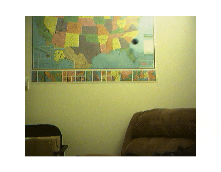
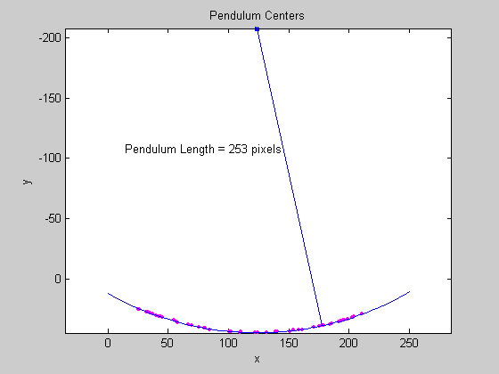

Calculating the Length of a Pendulum in Motion
This demo captures images of a pendulum in motion. The pendulum consists of a blue ball attached to a nylon string. Image data is captured as the pendulum is swung. Once captured, the images are processed to determine the length of the pendulum.
Images are acquired using the Image Acquisition Toolbox and analyzed with the Image Processing Toolbox.
Overview
Acquire a series of images to analyze.
% Access an image acquisition device. vid = videoinput('winvideo', 1, 'RGB24_352x288'); vid.Timeout = 12; % Configure object to capture every fifth frame. set(vid, 'FrameGrabInterval', 5); % Configure the number of frames to be logged. set(vid, 'FramesPerTrigger', 50); % Access the device's video source object selected for acquisition. src = getselectedsource(vid); % Configure the device to provide 30 frames per second. set(src, 'FrameRate', '30'); % Open a live preview window. Focus camera onto a moving pendulum. preview(vid); % Initiate the acquisition. start(vid); % Extract frames from memory. frames = getdata(vid); % Remove video input object from memory. delete(vid) clear vid % Display the first frame in the series. imshow( frames(:, :, :, 1) );
% Display all acquired images.
imaqmontage(frames);Since the pendulum;s motion is confined to the upper half of the image series. Create a new series of frames that contain the region of interest.
To crop a series of frames using |imcrop|, first perform |imcrop| on one frame and store its output. Then create a series of frames having the size of the previous output.
% Determine the total number of frames acquired.
nFrames = size(frames, 4);% Crop the first frame.
roi = [50 16 222 68];
firstFrame = frames(:,:,:,1);
frameRegion = imcrop(firstFrame, roi);% Create a storage for the modified image series. regions = repmat(uint8(0), [size(frameRegion) nFrames]); for count = 1:nFrames, regions(:,:,:,count) = imcrop(frames(:,:,:,count), roi); imshow(regions(:,:,:,count)); end
Segment the Pendulum in Each Frame
Since the pendulum is much darker than the background, the pendulum can be segmented in each frame by converting the frame to grayscale, thresholding it, and removing background structures.
% Initialize array to contain the segmented pendulum frames. segPend = false([size(frameRegion, 1) size(frameRegion, 2) nFrames]); centroids = zeros(nFrames, 2); structDisk = strel('disk', 3);
for count = 1:nFrames, % Convert to grayscale. fr = regions(:,:,:,count); gfr = rgb2gray(fr); gfr = imcomplement(gfr); % Experimentally determine the threshold. bw = im2bw(gfr, .7); bw = imopen(bw, structDisk); bw = imclearborder(bw); segPend(:,:,count) = bw; imshow(bw); end
Find the Centers of Each Segmented Pendulum
The shape of the segmented pendulum in each frame is not a serious issue because the pendulum's center is the only characteristic needed to determine the length of the pendulum.
% Calculate the pendulum centers. for count = 1:nFrames, lab = bwlabel(segPend(:, :, count)); property = regionprops(lab, 'Centroid'); pendCenters(count,:) = property.Centroid; end
% Display the pendulum centers and adjust the plot. figure; x = pendCenters(:, 1); y = pendCenters(:, 2); plot(x, y, 'm.'); axis ij; axis equal; hold on; xlabel('x'); ylabel('y'); title('Pendulum Centers');
By fitting a circle through the pendulum centers, the pendulum length can be calculated. Rewrite the basic equation of a circle:
where (xc,yc) is the center, in terms of parameters a, b, and c:
where:
Solving for parameters a, b, and c using the least squares method, the above equation can be rewritten as:
which can also be rewritten as:
This equation can be solved in MATLAB using the backslash(\) operator.
% Solve the equation. abc = [x y ones(length(x),1)] \ [-(x.^2 + y.^2)]; a = abc(1); b = abc(2); c = abc(3); xc = -a/2; yc = -b/2; circleRadius = sqrt((xc^2 + yc^2) - c); % Circle radius is the length of the pendulum in pixels. pendulumLength = round(circleRadius)
pendulumLength = 253
% Superimpose results onto the pendulum centers circle_theta = pi/3:0.01:pi*2/3; x_fit = circleRadius*cos(circle_theta) + xc; y_fit = circleRadius*sin(circle_theta) + yc; plot(x_fit, y_fit, 'b-'); plot(xc, yc, 'bx', 'LineWidth', 2); plot([xc x(1)], [yc y(1)], 'b-'); titleStr = sprintf('Pendulum Length = %d pixels', pendulumLength); text(xc-110, yc+100, titleStr);